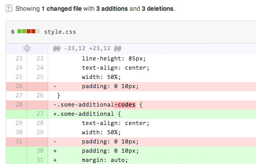

A brief introduction to Git and GitHub
2 October 2015
What are the benefits of version control?
Let's start with the TL;DR:
- Content is archived automatically
- Easily and safely revert to older (or newer) versions of code
- Log who made a change, what that change was, when it was made, and why it change was made
- Ability to compare changes side by side
The long(er) version:
Most people don't just create something that's 100% perfect on the first try. It's usually a process of gradually adding and refining content until things slowly start falling in place where they belong. Using version control allows you to keep track of every iteration of your work, each step of the way. Think of verison control as a safety net, whether you're working on code, a book, or a magazine layout. You always have the ability to go back in time to a version of your work that's free of any bugs or typos. If you're working with multiple people on a project, version control allows everybody to see what each team member contributed to the project, and, when Kreiger eventually ends up breaking everything, you can see go back to the working version before trying to figure out what went wrong.
How does git help you keep track of changes?

Git helps keep track of changes by comparing, line by line, the old file with the new file. (source)
{kind=link}
Git only saves a snapshot of a file (also known as a commit) when you tell it to. When telling git to commit changes, it's also a good rule of thumb to leave a short message that clearly summarizes how you've changed the file since the last commit. This page has useful information on how to craft commit message. Once a file is committed, git will compare the new file with the old file line by line and log the changes. By doing this, git makes is dead simple to figure out which commit caused your code to stop working. Once you know which commit caused the error, it's relatively simple to review the changes. Once you know where the problem or error was introduced, you can get started with the difficult part of figuring out how to fix it.
Why use GitHub to store your code?
Kazaa meevee eduvant gsnap movity kosmix kazaa klout jumo, trulia unigo groupon wakoopa spock knewton glogster heroku oooj, ning imvu appjet eskobo zillow twitter rovio. Glogster chegg voxy greplin dopplr voki foodzie xobni weebly odeo, sococo zynga knewton loopt palantir lala blyve tumblr blekko, twones akismet plaxo kippt meebo zillow zooomr insala. Oovoo imeem napster divvyshot zinch imeem voxy shopify, fleck kazaa zinch lanyrd boxbe joost wakoopa nuvvo, orkut elgg heekya sifteo scribd napster. Yammer yoono groupon dopplr cloudera nuvvo eduvant klout, voxy groupon disqus eduvant oooj greplin.